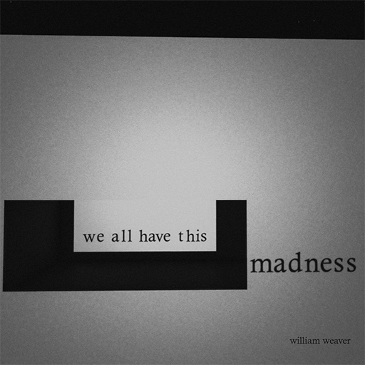

Aperture Viewer: nothing.is.not.possible
Experience the ultimate tool for virtual photography. Aperture Viewer is a cutting-edge, experimental viewer for Second Life and OpenSim, designed to push visual boundaries and empower you to create breathtaking virtual worlds.
Unlock Your Visual Potential
High-Resolution Snapshots
Capture Stunning Detail: High-Resolution Snapshots let you preserve every nuance of your virtual creations.
Real-time Visual Effects
Real-time Visual Mastery: Experiment with a suite of built-in visual effects to instantly shape your artistic vision.
Advanced Lighting Controls
Illuminate Your World: Advanced Lighting Controls offer precise manipulation of shadows and lights for dramatic realism.
Learning Resources
Unlock Your Creative Journey: Access How-To Guides and resources to master virtual photography with Aperture Viewer.
Captured with Aperture Viewer

